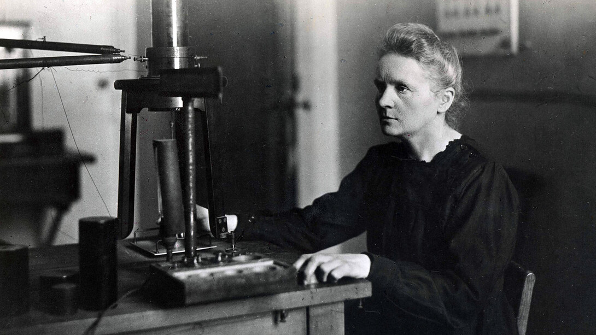

Marie Curie en su laboratorio.
HISTORIA:
- Noviembre 1867 - Nace Maria Salomea Sklodowska-Curie, conocida a día de hoy como Marie Curie.
- Mayo 1878 - Muere su madre.
- Junio 1883 - Se gradúa de la escuela secundaria logrando la medalla de oro.
- Enero 1886 - Comienza a trabajar como institutriz con los Zorawski.
- Marzo 1889 - Deja su trabajo de institutriz.
- Noviembre 1891 - Se registra como estudiante en la Sorbonne.
- Junio 1893 - Se gradúa en física de la Sorbonne, ocupando el primer lugar de la promoción.
- Julio 1894 - Se gradúa en matemáticas de la Sorbonne, ocupando el segundo lugar.
- Julio 1895 - Se casa con Pierre Curie.
- Septiembre 1897 - Nace su hija Irène Joliot-Curie.
- Julio 1898 - Junto a Pierre anuncian el descubrimiento del polonio. Días más tarde, junto a Pierre y Gustave Bémont, anuncia el descubrimiento del radio.
- Septiembre 1898 - Introduce el término radiactividad en un artículo publicado.
- Diciembre 1903 - Junto a Henri Becquerel y Pierre recibe el Premio Nobel de física.
- Diciembre 1904 - Nace Eva Curie.
- Abril 1906 - Muere Pierre en un accidente.
- Noviembre 1906 - Se convierte en la primera mujer profesor en la Sorbonne.
- Enero 1911 - Se le negó ser miembro de la Academia Francesa de Ciencias.
- Diciembre 1911 - Obtiene el Premio Nobel de la química.
- Agosto 1914 - Funda el Radium Institute.
- 1914 hasta 1919 - Organiza y opera la unidad de rayos-X móvil durante la Primera Guerra Mundial.
- Mayo-Junio 1921 - Visita Estados Undios para recibir un gramo de radio.
- 1929 - Segunda visita a Estados Unidos para recolectar dinero para las investigaciones en radio del Radium Institute.
- Julio 1934 - Muere de anemia perniciosa aplásica.
- Abril 1995 - Sus restos se ubican en un panteón. Primera mujer en ser honrada por sus logros.
LOGROS:
Sus logros incluyen los primeros estudios sobre el fenómeno de la radiactividad (término que ella misma acuñó), técnicas para el aislamiento de isótopos radiactivos y el descubrimiento de dos elementos —el polonio y el radio—. Bajo su dirección, se llevaron a cabo los primeros estudios en el tratamiento de neoplasias con isótopos radiactivos. Fundó el Instituto Curie en París y en Varsovia, que se mantienen entre los principales centros de investigación médica en la actualidad. Durante la Primera Guerra Mundial creó los primeros centros radiológicos para uso militar.
PREMIOS:
- 1903 - Premio Nobel de Fisica.
- 1903 - Medalla Davy.
- 1904 - Medalla Matteucci.
- 1907 - Actonian Prize.
- 1909 - Medalla Elliot Cresson.
- 1910 - Medalla Albert
- 1911 - Premio Nobel de Química.
- 1921 - Premio y Medalla John Scott.
- 1921 - Premio Willard Gibbs.
- 1921 - Medalla Benjamin Franklin.
CURIOSIDADES:
- Estuvo a punto de no recibir el Premio Nobel de Física pues la Real Academia de las Ciencias solo quería dárselo a Pierre. Este se negó a recibirlo si su esposa no era reconocida de la misma forma, ya que los descubrimientos los habían hecho juntos, por lo que el comité también le entregó el premio a Marie.
- Conoció a Pierre en un laboratorio. La pareja se conoció en París, cuando Marie buscaba un laboratorio para trabajar y un amigo polaco le recomendó el de Pierre Curie, jefe de laboratorio en la Escuela Municipal de Física y Química Industrial.
- Aunque la tradición de la época ya era que las mujeres se casaran vestidas de blanco, Marie lo hizo con un vestido de color azul oscuro, que era también el que llevaba como atuendo en su laboratorio. La boda también fue una ceremonia sencilla y no se intercambiaron anillos.
- Marie Curie era de una familia polaca humilde, así que cuando llegó a París para estudiar tuvo dificultades económicas. Estudiaba por las mañanas y trabajaba por las noches, aunque se dice que llegó a pasar hambre con tal de poder terminar sus estudios. Su salario solo le permitía comidas a base de pan con mantequilla y té, y en invierno llevaba puesta toda su ropa para poder mantenerse caliente.
- Los congresos de Solvay son unos eventos científicos que se celebran desde 1911 y que, al comienzo del siglo XX, reunían a los científicos más importantes de la época. Marie fue la primera mujer invitada a estas conferencias, dando lugar a una de sus fotos más famosas en la que aparece rodeada de hombres, entre los cuales se encuentran Einstein, Schrödinger o Born.